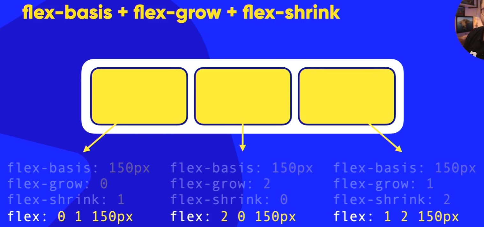

- Flex -
É recomendado pela W3C que a gente use essa tag flex como o shorthand para o flex-grow, flex-shrink e flex-basis.
Quando formos usar o shorthand flex:, devemos colocar os valores na seguinte ordem:
flex-grow > flex-shrink > flex-basis
Ou seja, iremos primeiro colocar o valor do flex-grow, depois o flex-shrink e por último o flex-basis.
Dê uma olhada na imagem abaixo para entender melhor:

Para não esquecermos, eis os valores padrão de cada um deles:
FLex-Grow- flex-grow: 0;
Flex-Shrink- flex-shrink: 1;
Flex-Basis- flex-basis: auto;
O atributo flex tem o padrão
. Se repararmos nesse valor, iremos identificar que é o valor padrão dos atributos flex: 0 1 autogrow, shrink e basis citados acima.
Existem 3 formas de colocar o valor padrão do atributo flex no documento HTML. Eis as formas: ↓
1 - Ao não declarar o atributo flex ele já estará ativo com o valor padrão;
2 - flex: 0 1 auto;
3 - flex: initial;